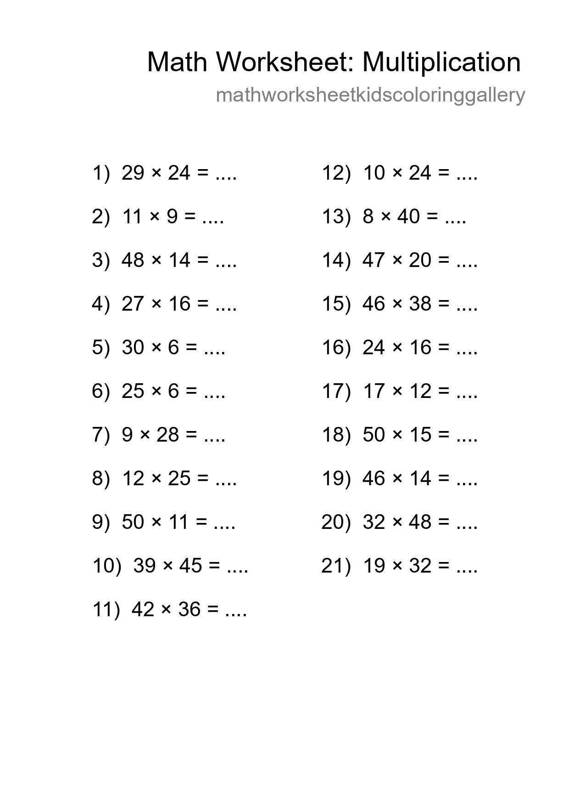
Free 21 Multiplication Math Worksheet For Grade 2 - Part 8
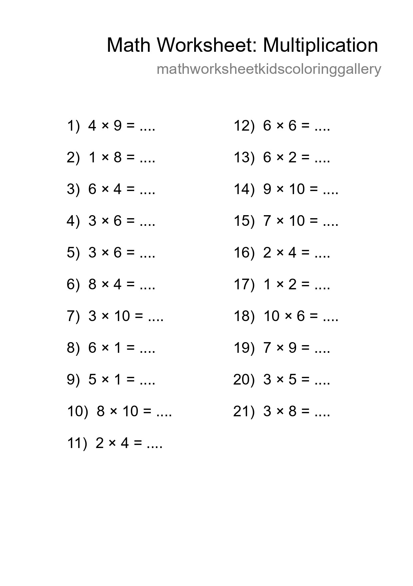
Free 21 Multiplication Math Worksheet For Grade 1 - Part 20
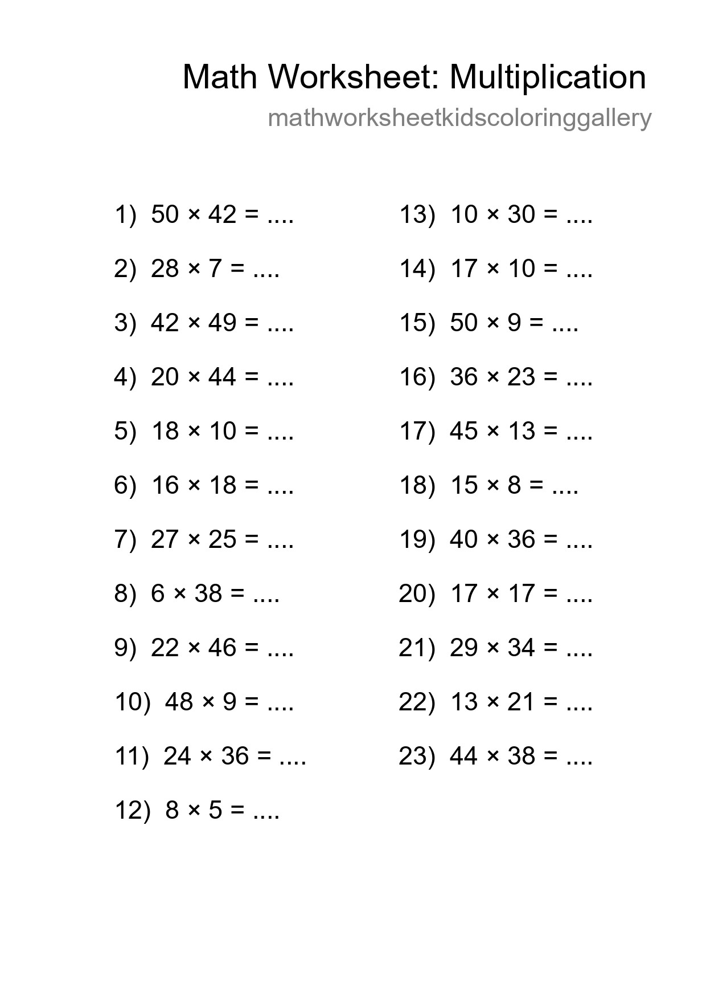
Free 23 Multiplication Math Worksheet For Grade 2 - Part 32
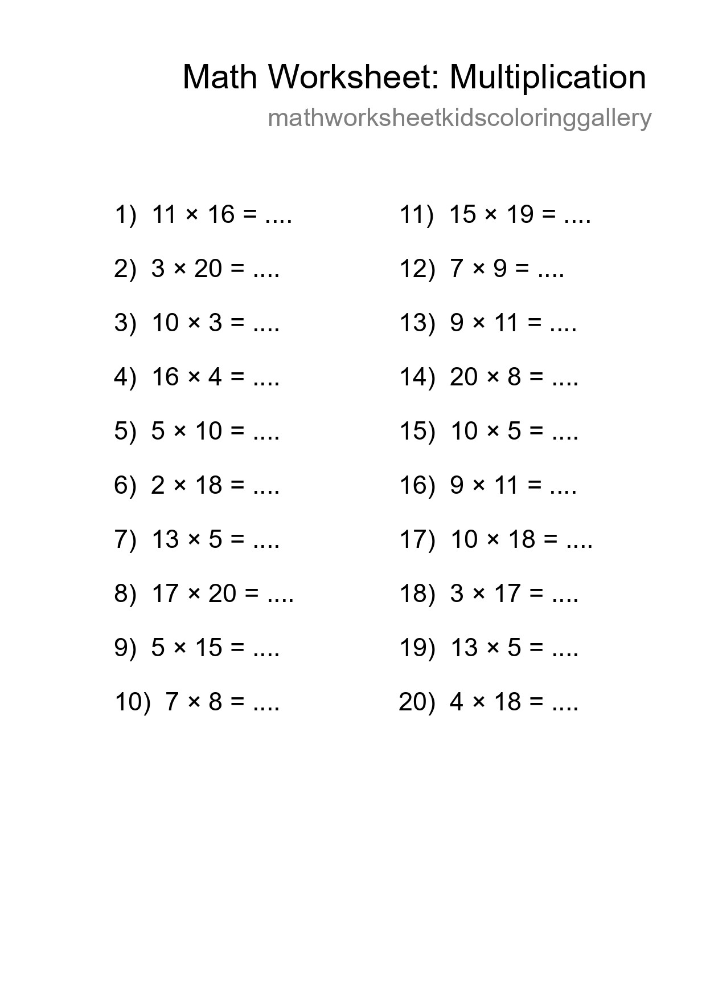
Printable Free 20 Multiplication Math Worksheet For Grade 2 - Part 44
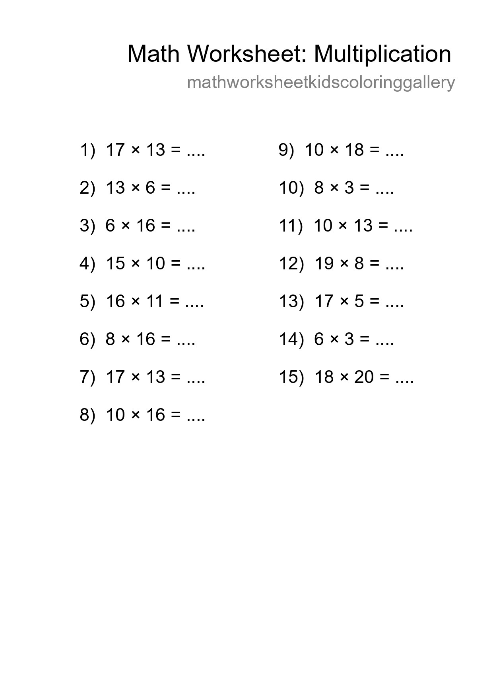
Printable Free 15 Multiplication Math Worksheet For Grade 2 - Part 56
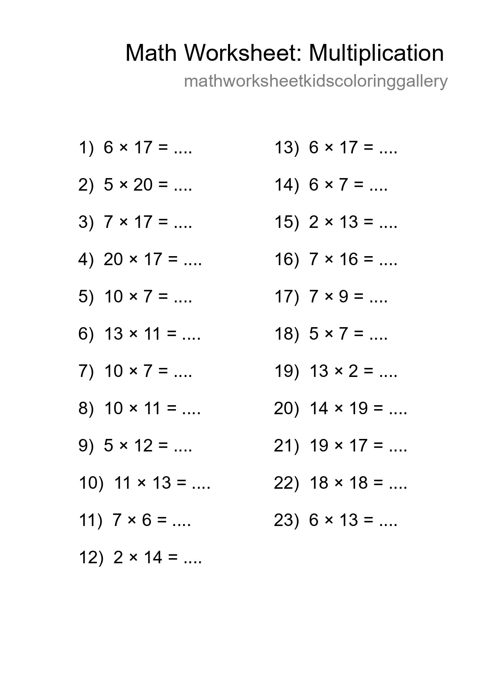
Grade 2 Multiplication Practice Worksheet (23 Problems) - Part 68
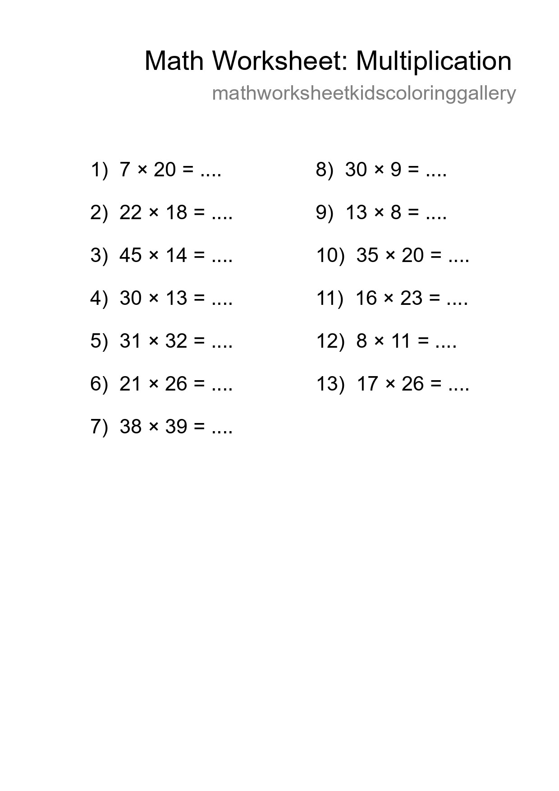
Free 13 Multiplication Math Worksheet For Grade 2 With Answers - Part 80
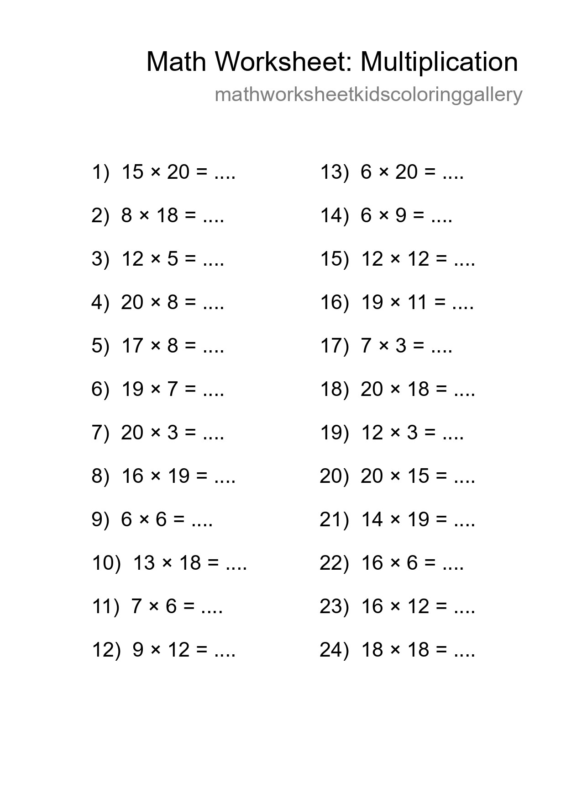
Free 24 Multiplication Math Worksheet For Grade 2 - Part 92
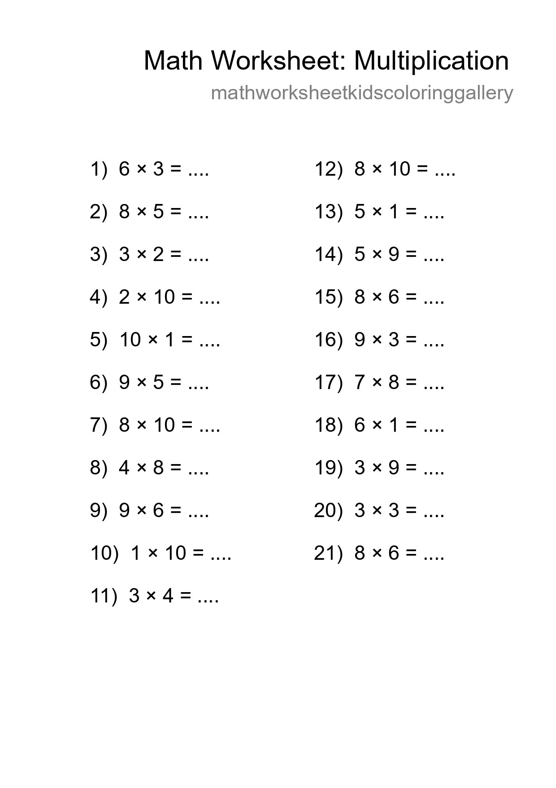
Free 21 Multiplication Math Worksheet For Grade 1 - Part 104
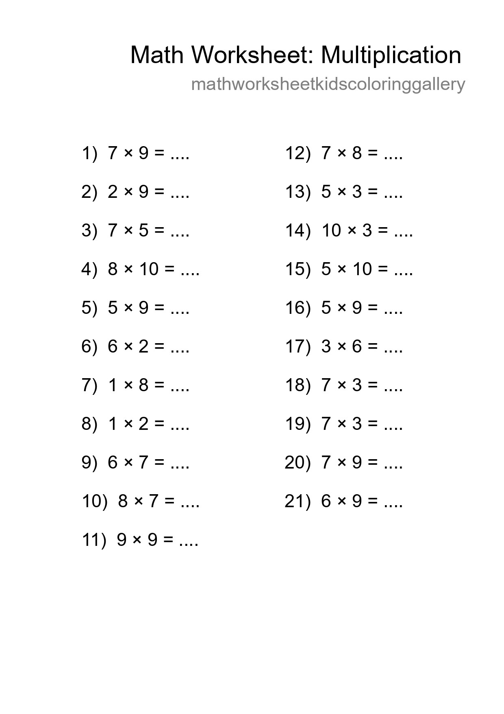
Free 21 Multiplication Math Worksheet For Grade 1 - Part 116
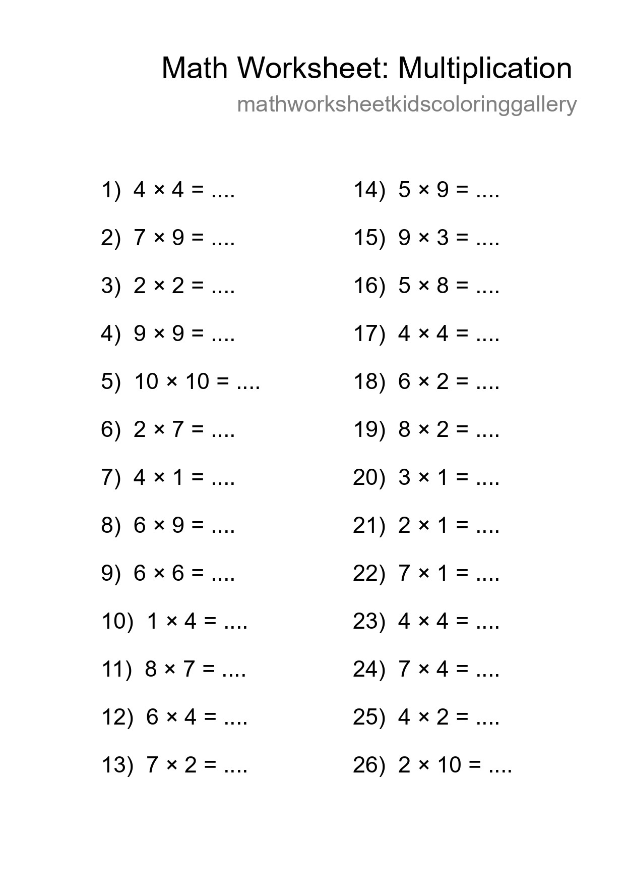
Printable Free 26 Multiplication Math Worksheet For Grade 1 - Part 128
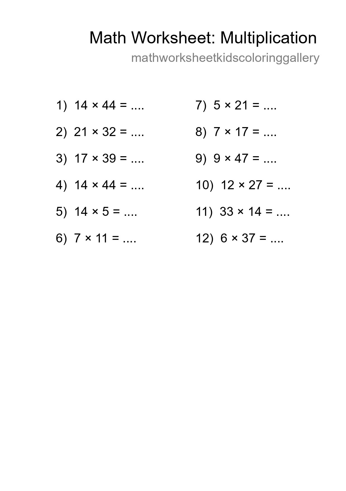
Free 12 Multiplication Math Worksheet For Grade 2 With Answers - Part 140

Free 29 Multiplication Math Worksheet For Grade 2 - Part 152

Free 18 Multiplication Math Worksheet For Grade 2 With Answers - Part 164

Free 10 Multiplication Math Worksheet For Grade 2 With Answers - Part 176

Free 10 Multiplication Math Worksheet For Grade 2 With Answers - Part 188